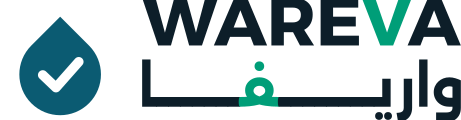

صندوق واريفا الذكي
يُضاف إلى محطة مياه رمادية قائمة، حتى محطات الموردين الآخرين، فيعطيها حساسات وقرار ري آليًا وسجلًا ومتابعة عن بعد. يسبق التركيبَ فحصُ توافق المحطة.
حساسات + ESP32 + Raspberry Pi + لوحة متابعة
واريفا تتحقق من جودة مياه الوضوء والمغاسل المعالجة لحظيًا قبل أن تصل إلى ري المساحات الخضراء. لا يُفتح صمام الري إلا لماء ضمن الحدود، ويتوقف خلال ثوانٍ عند أي خلل، ويُسجَّل كل لتر وكل قرار.
اليوم: نموذج برمجي يعمل، فيه توأم رقمي وقواعد أمان ولوحة متابعة وسجل.التالي: نموذج مادي قابل للاختبار في 6 أسابيع بأكاديمية الطاقة والمياه في رابغ.
مياه الوضوء والمغاسل من أنظف المياه الرمادية، لكنها تُصرف يوميًا في المرافق الكبيرة، لأن لا أحد يضمن جودة كل لتر قبل وصوله للري. المحطات الحالية تعالج، لكن جودة ما يخرج منها تُعرف بعينة مختبر بعد أيام.
أرقام المرفق والغرامات من عرض الفريق ومصادره الموثقة في docs/product.md. تاريخ اللائحة من نصها الرسمي.
تُجمع مياه الوضوء والمغاسل المفصولة في خزان، وتُضخ للمعالجة بتدفق ثابت.
وسائط ترشيح، ثم كربون منشّط، ثم خرطوشة 5 ميكرون، ثم تعقيم بجرعات متناسبة مع التدفق.
حساسات للعكارة والأس الهيدروجيني والكلور المتبقي وORP والضغط والتدفق ومستوى الخزان.
متحكم ESP32 يقارن كل قراءة بحدود ثابتة. ماء مطابق: يُفتح صمام الري. خلل أو قراءة مفقودة أو انقطاع كهرباء: يبقى مغلقًا.
كل لتر وكل قرار وسببه في سجل قابل للتصدير، ولوحة متابعة عن بعد تقلل الزيارات الحضورية.
| المعيار | بدون إعادة استخدام | محطات السوق | واريفا |
|---|---|---|---|
| الجودة | لا ينطبق | تُعرف بعينة بعد أيام | تُقاس لحظيًا قبل كل لتر |
| عند الخلل | لا ينطبق | يُكتشف في الزيارة التالية | يتوقف الري خلال ثوانٍ |
| المتابعة | لا ينطبق | زيارات حضورية دورية | عن بعد، والزيارة عند الحاجة |
| التوثيق | لا ينطبق | يدوي | سجل لكل لتر وكل قرار |
يُضاف إلى محطة مياه رمادية قائمة، حتى محطات الموردين الآخرين، فيعطيها حساسات وقرار ري آليًا وسجلًا ومتابعة عن بعد. يسبق التركيبَ فحصُ توافق المحطة.
حساسات + ESP32 + Raspberry Pi + لوحة متابعةمعالجة وتحقق وتحكم في وحدة واحدة، لمرافق لا توجد فيها محطة.
15 م³/يوم · 1 م³/ساعة لمدة 15 ساعةنموذج مصغّر بخزان ومضخة وأعمدة شفافة وحساسات وصمام ري، يُختبر في أكاديمية الطاقة والمياه برابغ على مياه وضوء ومغاسل حقيقية. هذه أهداف القبول، ولم تُختبر بعد.
| المؤشر | الهدف | معيار النجاح |
|---|---|---|
| زمن إيقاف الري عند ماء غير مطابق | ≤ 10 ثوانٍ | 20 من 20 حالة تلوث مصطنعة |
| بقاء الصمام مغلقًا عند فصل الكهرباء أو الحساس | مغلق | 10 من 10 حالات فصل متعمد |
| عكارة الماء المتجه للري | < 2 NTU متوسطًا | 3 من 3 عينات تجتاز مختبرًا معتمدًا |
| دقة حساس العكارة | ±10% | 18 من 20 قراءة مقابل جهاز مرجعي |